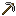

Dijkstra paso a paso sobre grafos dirigidos acíclicos
Genera, dibuja o carga un grafo y sigue cada paso del algoritmo hasta obtener todos los caminos mínimos.
Ejemplo con dos caminos empatados: cargar grafo de 8 nodos o grafo de 12 nodos (sin trayectorias de longitud 1 a 3 entre A y L). Los archivos JSON son compatibles con la aplicación de escritorio.
Cómo funciona
Grafo dirigido acíclico
Cada arista tiene un peso positivo y el grafo no tiene ciclos. Por eso se puede ordenar de izquierda a derecha por capas, y cada arista nueva se rechaza si cerraría un ciclo.
Selección y relajación
En cada paso Dijkstra toma el nodo no visitado con menor distancia y revisa sus aristas salientes. Si la ruta por ese nodo es más corta, actualiza la distancia y el predecesor. La tabla de la demo muestra ese estado paso a paso.
 Caminos mínimos empatados
Caminos mínimos empatados
Cuando dos rutas cuestan lo mismo, el programa guarda todos los predecesores y, al terminar, recorre la lista hacia atrás para listar cada camino mínimo. Con la opción “Forzar empate” el generador crea ese caso a propósito.
Costo
Con una cola de prioridad el algoritmo toma tiempo O((|V| + |E|) log |V|). Es correcto porque todos los pesos son positivos.
while pq:
d0, u = heapq.heappop(pq)
if u in visited:
continue
visited.add(u)
for v_node, w in graph.adj[u]:
nd = d0 + w
if nd < dist[v_node]:
dist[v_node] = nd
preds[v_node] = [u]
heapq.heappush(pq, (nd, v_node))
elif nd == dist[v_node]:
if u not in preds[v_node]:
preds[v_node].append(u) # empateAutores
-
 Manuel Herrera
Manuel Herrera -
Gengis Cam Pizarro gegecam30 en GitHub
-
 Santiago Ceron
Santiago Ceron -
Nicolas Nima TUXERO1986 en GitHub
-

Piero Bobadilla